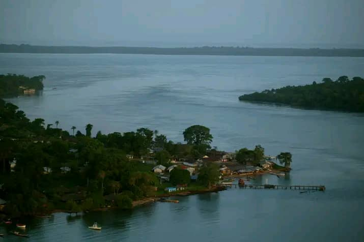

O que e a biodiversidade?
A Guine-Bissau possui uma das maiores riquezas naturais da Africa Ocidental, com grande diversidade de animais, plantas e ecossistemas...Ler mais
A BIODIVERSIDADE, OU DEVERSIDADE BIOLESICO, E A VARIEDADE DE TODOA A VIDA NA TERRA, ABRANGEBDO ECOSISTEMAS, ESPECIES, E VARIABILIDADE GENERICA.
Essencial para a sobreviencia humana, ela sustenta serviços ecosistemicos como ar puro, agua, polinizaçao de alimentos e medicamentos.

Destacam-se as florestas tropicais, mangais, rios e o arquipélago dos Bijagós...Ler mais